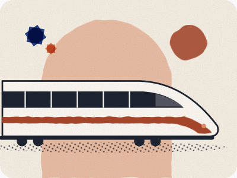

Catching your train at Casa Voyageurs
Direct trains to Marrakech leave from Casa Voyageurs. Buying a ticket, finding your platform, and travelling with luggage.

Written by Omar Oujoud in Casablanca. Research drafting is AI-assisted; observations are recorded in person. How we check
The facts on this page were reviewed against their sources between 24 and 28 September 2026. None has been checked in person yet. Each fact shows its own status and date.
Jump to what’s still being checked · sources
Your ticket
ONCF sells tickets online, at station counters and at ticket machines Source-checked 28 Sep 2026 Sources. Under ONCF’s sales conditions the machines take bank cards only, not cash Source-checked 28 Sep 2026 Sources. If you want to pay cash, use a staffed counter.
An issued e-ticket can be shown on your phone or printed Source-checked 28 Sep 2026 Sources. A booking confirmation from a third-party site is not always the same as an issued ONCF ticket.
Our advice: save your ticket so it opens without mobile data, and keep your phone charged for inspection.
Finding your platform
The station has electronic departure boards and staffed ONCF welcome points Source-checked 28 Sep 2026 Sources. We don’t publish a platform number: use the departure board.
- Find your train number and departure time on your ticket.
- Match them on the departure board and follow the platform signs.
- If anything is unclear, show your ticket to ONCF staff.
Phrases to show staff:
- « Bonjour, quel quai pour ce train, s’il vous plaît ? » Which platform is this train, please?
- من فضلك، من أي رصيف ينطلق هذا القطار؟ The same question in Arabic.
- « Comment rejoindre ce quai sans prendre les escaliers ? » How do I reach this platform without stairs?
Luggage
ONCF lists a general maximum luggage size of 1.2 m × 0.6 m × 0.4 m Source-checked 28 Sep 2026 Sources, and bags must be manageable and stored safely. Special items have their own conditions.
Step-free access
A 2018 ONCF report describes platforms reached from a bridge above the tracks Unconfirmed Sources.
ONCF offers free help boarding and leaving the train for travellers with reduced mobility, booked 48 hours ahead at a station or on 2255 Source-checked 28 Sep 2026 Sources.
Our advice: if stairs would stop your journey, book that help before you travel rather than relying on lifts.
Still being checked
Not yet confirmed, so not stated as fact on this page:
- A step-free route from the entrance to the Marrakech platforms, and whether the lifts are working.
Next on your route.
Each guide covers one step of the journey.
Sources for this page
Every fact on this page shows when it was checked and links here to its source. What the badges mean.
- Casa Voyageurs / ONCF passenger procedures: ONCF, ONCF, page 2. Reviewed 28 Sep 2026.
- ONCF machine payment: ONCF. Reviewed 28 Sep 2026.
- Casa Voyageurs / ONCF passenger procedures: ONCF. Reviewed 28 Sep 2026.
- Casa Voyageurs / ONCF passenger procedures: ONCF. Reviewed 28 Sep 2026.
- ONCF luggage: ONCF. Reviewed 28 Sep 2026.
- Casa Voyageurs / ONCF passenger procedures: ONCF. Reviewed 24 Sep 2026.
- ONCF assistance booking: ONCF. Reviewed 28 Sep 2026.